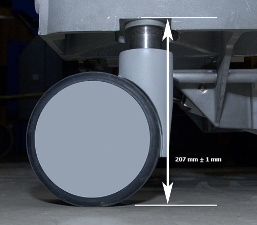
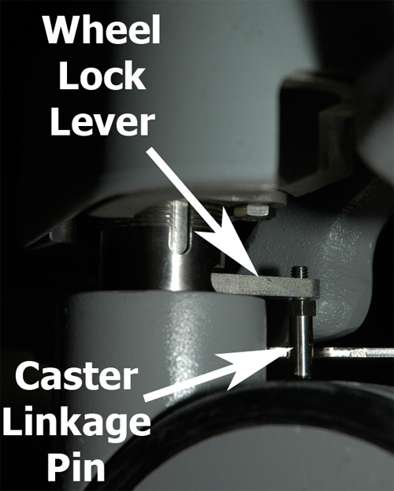
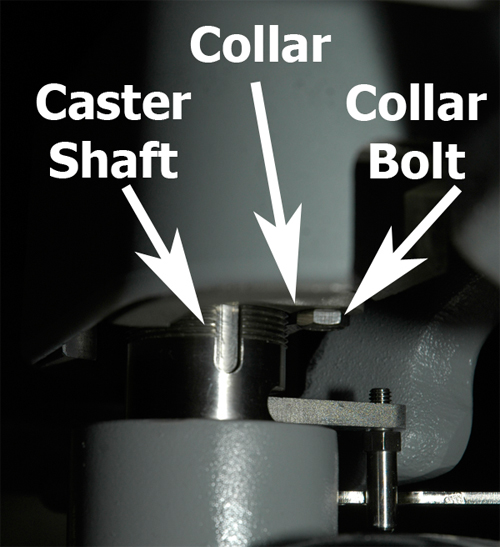
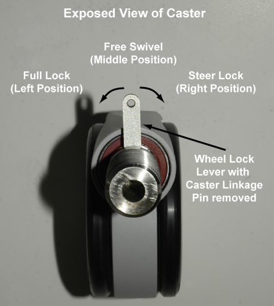

Operating Documentation
Direction 5670000, Rev# 1
Optima MR450w 1.5T Service Methods
Module Version 5.0, Version Date 8/19/08
Operating Documentation |
| Required Persons | Preliminary Reqs | Procedure | Finalization |
|---|---|---|---|
| 1 | 60 minutes |
The Patient Table is aligned vertically to the magnet by adjusting the caster height. However, the caster height must also be checked for uniform loading to ensure levelness.
| Item | Qty | Effectivity | Part# | Manufacturer | |
|---|---|---|---|---|---|
| Non-magnetic Service Tools kit | 1 | - | 5112581 | - | |
| Non-ferrous level | 1 | - | - | - | |
| ||||
| flying projectile danger! | ||||
| ferrous material hazard! torque wrench and socket drive contain ferrous material and can become forcibly attracted to the magnet. | ||||
| do not bring these tools into the magnet room. |
Dock the Patient Table.
| NOTE: | If dock mechanism is not properly adjusted (during installation), position the patient table in the approximate location it will be in when docked. Be careful not to let the casters sit in a rut or seam on the floor. Ensure that the table is positioned on a relatively level surface. |
Lock the rear caster brakes.
Raise the patient table to a fully-raised position, and then check levelness from front-to-back along the top right or left edge of the bridge and from left-to-right across the front of the bridge using a non-ferrous level.
Illustration 1: Measuring Levelness of Patient Table

| NOTE: | Check that all casters are sharing the load equally by applying a small lifting force at each corner of the table and watching the caster lift easily off the floor. If one caster or two diagonally-mounted casters seem to be unevenly loaded compared to the other casters, then they will require adjustment. |
During installation, this procedure describes how to “check” the caster height (factory default) settings. If the patient table requires adjustment, go to the next procedure “Leveling the Patient Table.”
To help keep track of measurement data, temporarily label each caster as 1, 2, 3, and 4. Based on the Caster Wheel Labels in Illustration 1, we suggest you label the steering caster (front left facing the magnet) as 1, and proceed labeling in a clockwise direction.
Remove the lower side covers and front and rear caster assembly covers. For more information on removing the side covers, see Patient Table Cover Removal.
At each of the four caster wheel assemblies, measure the height from the floor to the bottom edge of the aluminum support casting (see Illustration 2). Record the values for each caster in the table below.
Illustration 2: Caster Measurement

| NOTE: | In Table 1, the Delta figure is the actual height measured minus the nominal shown in Illustration 2. This provides a measurement by which to adjust the caster height. |
Table 1: Caster Measurement Values
| 1st Measurement | 2nd Measurement | |||
| Caster | Height | Delta +/- | Height | Delta +/- |
| 1 | ||||
| 2 | ||||
| 3 | ||||
| 4 | ||||
While all four casters look identical from an exterior perspective, there is one notable difference regarding design when observing each caster assembly inside the caster covers. The Patient Table front left caster is known as the steer lock wheel, whose caster assembly design differs from the other three casters. It has a triangle shaped bracket
Undock Patient Table and position it 1-2 inches in front of the dock to perform work as close to the “docked” position as possible.
| NOTE: | From previous procedure, both caster assembly covers and the lower side covers are still off. |
Disengage rear caster brake lock pedal.
At the desired caster that requires adjustment, remove the caster linkage pin using a 10 mm wrench.
Illustration 3: Caster Linkage Pin

Remove the collar bolt using an 11 mm wrench.
Illustration 4: Remove Collar Bolt

| NOTE: | Illustration 4 depicts a floor-level view looking at the right underside of the caster assembly. This particular view is the same for all four casters. |
Slide the collar down the shaft so it rests on top of the caster shaft housing.
Looking from a top-down perspective, move the Wheel Lock Lever to the Full Lock position.
Illustration 5: Wheel Lock Lever Positions

The Wheel Lock Lever has three positions:
Full Lock, or Pivot Lock—The left position locks the caster so the Patient Table cannot move.
Free Swivel—The middle position allows the caster to move freely.
Steer Lock—The right position locks the caster in place but the wheels can turn.
Turn the caster clockwise (raises the table) or counterclockwise (lowers the table) to make adjustments.
| NOTE: | Turning the caster one complete revolution raises or lowers the caster by 1 mm. You cannot make quarter or half turns on any caster because the collar has to return to its home position. |
| ||||
| PER DESIGN SPECIFICATION, DO NOT EXCEED A RAISING OR LOWERING ADJUSTMENT GREATER THAN 1/4 INCH (6 mm). IN OTHER WORDS, DO NOT EXCEED MORE THAN 6 REVOLUTIONS IN EITHER DIRECTION. | ||||
Remeasure the caster height and record the value in Table 1.
Perform Steps 3 to 6 in reverse order to reassemble the caster bolt and linkage pin.
Once all casters have been adjusted, re-measure the table levelness and adjust the casters again as necessary by repeating this procedure.
Once table is level, reattach the caster assembly covers and lower side covers, and then redock the Patient Table.
No finalization steps.